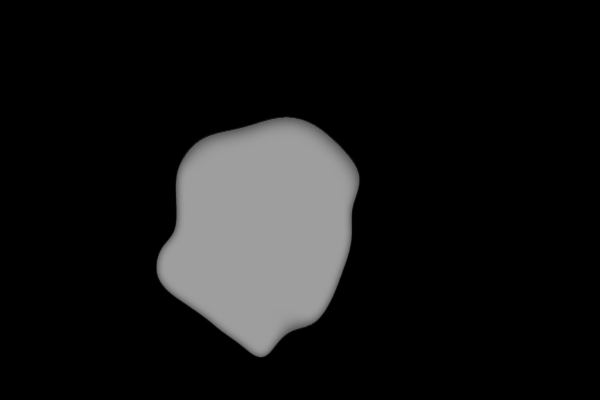

1 Warming up
0.1 Fill
0.2 Brush
0.3 Soft Brush
1 Luminance Operations
1.1 Brightness
1.2 Contrast
1.3 Gamma Correction
1.4 Vignette
1.5 Histogram Equalization
2 Color Operations
2.1 Saturation
2.2 White Balance
2.3 Historgram Matching
3 Filter Operations
3.1 Gaussian Filter
3.2 Sharpen Filter
3.3 Edge
3.4 Median Filter
3.5 Bilateral Filter
4 Dithering Operations
4.1 Quantization
4.2 Random Dither
4.3 Floyd-Steinberg Dither
4.4 Ordered Dither
5 Resampling Operations
5.1 Scale
5.2 Rotate
5.3 Swirl
6 Composite Operations
6.1 Composite
6.2 Morph
7 Miscellaneous
7.1 Palette
7.2 XDoG
Fill
Fill the image with Princeton Orange: URL
{kind=link}

Brush
Paint course logo: URL
![URL](http://localhost:8000/batch.html?Push_Image=flower.jpg&Fill=[1,0.560784313725,0,1]&Brush=10;[0,0,0,1];x116y130x114y130x109y130x104y130x98y131x87y134x82y136x79y138x76y141x72y145x68y150x65y157x60y165x58y170x57y174x56y178x55y186x54y195x54y202x55y206x57y210x59y212x64y217x66y218x69y220x72y221x75y222x78y223x80y223x82y223x83y223x84y223x85y223x86y223x87y223x89y223x93y222x95y221x97y220x98y220x99y219x101y219x102y218x104y217x105y216x107y214x108y213x109y212x110y211x110y210x112y210x112y209x113y208x114y208x114y207x116y205x117y205x117y204x118y203x119y203x119y202x151y157x151y158x150y160x149y162x148y164x148y166x148y168x148y170x147y172x147y175x147y177x147y178x147y179x147y180x147y181x147y182x147y185x147y186x148y190x148y191x150y192x150y194x151y195x151y196x152y196x154y197x157y198x161y199x163y200x165y200x167y200x169y200x171y200x173y200x175y199x176y199x179y198x181y197x183y195x186y194x187y194x188y193x189y191x190y189x191y187x191y185x191y183x191y181x191y179x192y178x192y177x192y176x192y173x192y171x192y167x192y162x189y159x188y157x185y156x182y155x180y153x178y153x176y152x174y151x172y151x170y151x164y151x160y151x157y151x156y151x154y151x252y127x240y131x238y132x237y132x236y133x234y135x233y137x232y137x231y138x230y141x228y145x228y148x227y152x227y156x227y158x227y159x227y162x227y163x228y164x231y164x231y165x235y165x243y165x250y165x253y165x256y166x259y168x261y170x263y172x264y174x264y175x264y176x264y177x265y179x265y183x265y184x265y185x265y186x265y187x264y189x264y190x263y192x263y193x261y195x259y198x259y199x258y199x257y200x257y201x256y201x256y202x255y202x255y203x253y204x252y205x251y205x250y206x249y206x248y207x247y207x245y207x245y208x244y208x243y208x242y209x241y209x240y209x240y210x238y210x237y211x236y211x234y212x231y212x230y212x229y212x228y212x227y212x226y212x225y212x224y212x223y212x222y212x221y212x220y212x325y125x325y126x323y127x322y129x321y131x318y133x317y134x316y138x314y143x313y145x313y146x312y148x311y149x311y150x310y151x310y152x309y153x308y156x307y157x306y159x305y161x304y162x302y163x302y165x301y166x301y167x301y168x300y168x300y169x299y169x299y170x299y171x299y172x300y172x301y174x303y174x306y174x308y175x311y175x314y175x316y175x321y175x325y174x328y174x330y173x332y173x335y172x337y172x340y171x342y171x344y170x349y169x350y168x351y168x353y167x354y167x356y167x358y167x359y167x360y166x361y166x362y166x332y128x332y129x332y131x332y135x332y137x332y139x332y141x333y143x334y146x335y150x335y151x335y152x335y154x336y155x336y156x336y157x336y159x336y160x336y161x337y165x337y168x337y171x337y172x337y173x337y174x339y177x339y178x339y180x339y183x339y187x339y188x339y189x339y190x340y192x340y193x340y194x339y196x339y198x339y201x339y203x339y205x339y206x395y125x396y125x402y125x407y125x412y126x414y127x415y127x418y129x420y131x421y133x422y134x423y139x425y144x425y145x425y148x425y151x425y154x422y158x421y160x419y164x414y169x409y175x405y180x401y183x399y185x395y190x392y192x389y196x388y197x387y199x386y200x387y200x388y200x390y200x394y200x396y199x403y198x408y197x410y197x415y195x416y195x419y194x422y193x426y193x428y192x430y192x432y192x433y192x434y192x435y192x436y192x437y192x438y192x439y192x441y192x442y192x443y192x444y192x445y192x446y192x447y192x448y192x449y192x450y193x450y194x514y119x513y119x512y119x511y119x510y119x507y118x506y118x505y118x503y118x501y118x499y118x498y118x498y119x497y119x496y120x495y121x494y122x493y123x493y124x490y130x488y133x488y134x487y136x486y138x486y139x486y140x485y141x485y142x485y143x484y148x483y150x483y151x483y153x483y155x483y156x483y159x483y162x482y164x482y168x482y172x482y173x482y174x482y176x482y178x482y179x482y180x482y181x482y182x482y184x483y185x483y186x484y187x484y188x485y188x486y189x486y190x488y191x490y192x491y192x492y193x493y193x494y194x496y194x497y195x498y195x499y195x500y195x501y195x502y195x503y195x504y196x505y196x506y196x508y196x511y196x513y196x514y196x515y196x516y195x518y194x519y194x519y193x520y193x520y192x522y190x523y189x523y188x524y188x524y187x524y186x524y185x525y185x525y184x525y183x525y181x525y180x525y179x526y178x526y177x526y176x526y175x526y173x526y171x526y170x526y168x526y167x525y166x525y165x525y164x524y163x522y161x521y160x520y160x519y159x517y159x516y158x515y158x514y158x513y158x512y158x511y158x510y157x509y157x508y157x507y157x506y157x505y157x504y157x503y157x502y157x501y157x500y157x500y158x499y158x498y158x498y159x497y159x496y159x496y160){kind=link}
Soft Brush
Paint a circle with center opacity equals to 1.0: URL
{kind=link}
Paint a circle with center opacity equals to 0.5: URL
{kind=link}
Paint some clouds in mesa.jpg: URL
{kind=link}
Luminance Operations
Brightness
brightnessFilter(image, ratio)
changes the brightness of an image by blending the original colors with black/white color in a ratio. (When ratio > 0,
we blend with white to make it brighter; when ratio < 0, we blend with black to make it darker).
|
 -1
|
|
 0
|
|
|
Contrast
contrastFilter(image, ratio)
changes the contrast of an
image by interpolating between a constant gray image (ratio=-1) with the
average luminance and the original image (ratio=0). Interpolation reduces
contrast, extrapolation boosts contrast, and negative factors generate inverted
images. Use the following formula which is mentioned in Wiki Contrast:
value = (value - 0.5) * (tan ((contrast + 1) * PI/4) ) + 0.5;
|
 -1
|
|
 0
|
 0.5
|
|
Gamma Correction
gammaFilter(image, logOfGamma)
changes the image by applying gamma correction, , where
|
 -1
|
|
 0
|
 0.4
|
|
Vignette
vignetteFilter(image, value)
darkens the corners of the image, as observed when using lenses with very wide apertures (ref).
The function takes the innerRadius and outerRadius as inputs.
The image should be perfectly clear up to innerRadius, perfectly dark (black) at outerRadius
and beyond, and smoothly increase darkness in the circular ring in
between.
Both are specified as multiples of half the length of the image diagonal
(so 1.0 is the distance from the image center to the corner).
Note: the vignetting ring should be a perfect circle, not an ellipse. Camera lenses typically have circular apertures, even if the sensor/film is rectangular.
|
|
|
 innerR:0.25, outerR:0.75
|
 innerR:0, outerR:0.75
|
Histogram Equalization
histeqFilter(image)
increase the contrast of the image by histogram equalization
in HSL’s L channel, that is, remapping the pixel intensities so that
the final histogram is flat.
A low contrast image usually clumps most pixels into a few tight
clusters of intensities. Histogram equalization redistributes the pixel
intensities uniformly over the full range of intensities [0, 1], while
maintaining the relationship between light and dark areas of the image.
|
|
|
Color Operations
Saturation
saturationFilter(image, ratio)
changes the saturation of
an image by interpolating between a gray level version of the image (ratio=-1)
and the original image (ratio=0). Interpolation decreases saturation,
extrapolation increases it, and negative factors preserve luminance but invert
the hue of the input image. See Graphica Obscura, its parameter alpha=1+ratio in our slider.
|
|
 -0.5
|
|
|
|
White Balance
whiteBalanceFilter(image, hex)
Adjust the white balance of the
scene to compensate for lighting that is too warm, too cool, or tinted, to produce a neutral image.
Use Von Kries method:
convert the image from RGB to the [LMS color space](http://en.wikipedia.org/wiki/LMS_color_space)
(there are several slightly different versions of this space, use any reasonable one, e.g. RLAB),
divide by the LMS coordinates of the white point color (the estimated tint of the illumination),
and convert back to RGB.
|
|
|
|
|
 Given white hex: #f5cece
|
Historgram Matching
histMatchFilter = function(image, refImg)
Adjusts the color/contrast of the input image by matching the histgram to refImg images in the luminance channel.
The results in the row below use the histogram matching in the luminance channel.
|
|
|
Filter Operations
Gaussian Filter
gaussianFilter(image, sigma)
Blurs an image by convolving it with a Gaussian filter. In the examples below, the Gaussian function used was
and the number below each image indicates the sigma of the filter. You set the filter window size to Math.round(3*sigma)*2+1.
|
 1
|
 2
|
|
|
 5
|
Sharpen Filter
sharpenFilter(image)
sharpens edges in an image by convolving it with the edge kernel as belows and add it to the original image:
Edge
edgeFilter = function(image)
convolves the image with the edge kernel. We invert the image (pixel = 1 - pixel) in the example below for better visualization.
|

|

|
Median Filter
medianFilter(image, winR)
blurs an image by replacing each pixel by the median of its neighboring pixel((2*winR+1) * (2*winR+1)).
The results below are generated by doing median filter in RGB channel
separately. You can also sort the pixels using the luminance only.
|
 1
|
 2
|
 3
|
|
 5
|
Bilateral Filter
bilateralFilter(image, sigmaR, sigmaS)
blurs an image by replacing each pixel by a weighted average of nearby
pixels. The weights depend not only on the euclidean distance of pixels
but also on the pixel difference, for the pixel difference it could
either be luminance difference or L2 distance in color space.
Consider the pixel I(i,j) located in (i,j), the weight of pixel I(k,l)
follows the following equation:

We set the filter window size to 2* Math.round( max(sigmaR,sigmaS)*2 ) + 1.
In the examples below, to make the weight for pixel and spatial more fair, we multiply sigmaR by sqrt(2)*winR. If we don't take this factor into consideration, the filter does not do any blurring and the result looks unchanged.
|
 sigmaR=1, sigmaS=1
|
 sigmaR=2, sigmaS=1
|
 sigmaR=3, sigmaS=0.5
|
 sigmaR=4, sigmaS=2
|
 sigmaR=5, sigmaS=3
|
Dithering Operations
Quantization
quantizeFilter(image) converts an image to a binary image (0 or 1).

Random Dither
randomFilter(image)
converts an image to a binary image using random dithering. It is similar to uniform
quantization, but random noise range in each unit is added to each component during quantization,
so that the arithmetic mean of many output pixels with the same input level
will be equal to this input level.

Floyd-Steinberg Dither
floydFilter(image)
converts an image to a binary image using Floyd-Steinberg dither with error diffusion.
Each pixel (x,y) is quantized, and the quantization error is
computed. Then the error is diffused to the neighboring pixels (x + 1,y), (x - 1,y + 1),
(x,y + 1), and (x + 1,y + 1) , with weights 7/16, 3/16, 5/16, and 1/16, respectively.
Ordered Dither
orderedFilter(image)
converts an image to a binary image using ordered dithering. The following examples used the pattern:

Resampling Operations
Scale
scaleFilter(image, ratio)
scales an image in width and height by ratio. The result depends on the current sampling method (point, bilinear,
or Gaussian). In the example below, gamma=1, the window radius of the Gaussian filter is 3, ratio = 0.7.
|
|
|
 Gaussian
|
Rotate
rotateFilter(image, radians, sampleMode)
rotates an image by the given angle, in radians (a positive angle implies clockwise rotation).
The result depends on the current sampling method (point, bilinear, or Gaussian).
We set sigma of the gaussian filter to 1.0, and the window radius of the Gaussian filter to 3.0. \
In the example below, radians = 0.2 * pi.
|
|
 Bilinear
|
 Gaussian
|
Swirl
swirlFilter(image, radians, sampleMode)
warps an image using a creative filter of your
choice. In the following example, each pixel is mapped to its corresponding
scaled polar coordinates, here radians = 0.4 * pi.
|
 Point
|
 Bilinear
|
 Gaussian
|
Composite Operations
Composite
compositeFilter(backgroundImg, foregroundImg)
composites the foreground image
over the background image, using the alpha channel of the foreground image to blend two images.
The alpha channel can be obtained by pushing a third image or painting a third image using “Brush”.
Gaussian smoothing the painted alpha channel usually gives better result.
|
|
|
 Foreground Img(alpha channel)
|
|
|
|
|
 Foreground Img(alpha channel)
|
|
Morph
morphFilter(initialImg, finalImg, lines, alpha)
Morph two images using [[Beier92]](http://www.hammerhead.com/thad/morph.html). initialImg and finalImg are the before and after images, respectively.
lines are corresponding line segments to be aligned.
alpha is the morph time: it can be a number between 0 and 1 indicating which point in the morph sequence should be returned,
or can be (start:step:end) to define a morph sequence. In terms of parameter choosing, we set p = 0.5, a = 0.01, and b = 2.
|
 0
|
 0.11
|
 0.22
|
|
 0.44
|
|
|
|
|
|
 1.0
|
Here is an animation of the sequence:

And here is the morph for parameters alpha=(0:0.1:1) for
the example images and morph lines provided with the assignment zip,
together with a still frame at alpha=0.5:
|

|

|
Miscellaneous
Palette
paletteFilter(image, colorNum)
extracts colorNum colors as a palette to represent colors in the image.
Here we use k-means method to extract color palette in the image with
grid acceleration.
|
|
|
|
XDoG
xDoGFilter(image, value) Stylizes images into a pencil-drawing fashion
using the eXtended Difference-of-Gaussians compendium described by
Winnemoeller.
You can use the approach of Kang
to make the flow field (instead of the one in the XDoG paper)
because it is based on bilateral filter that you already implemented.
|
|
 1.0
|